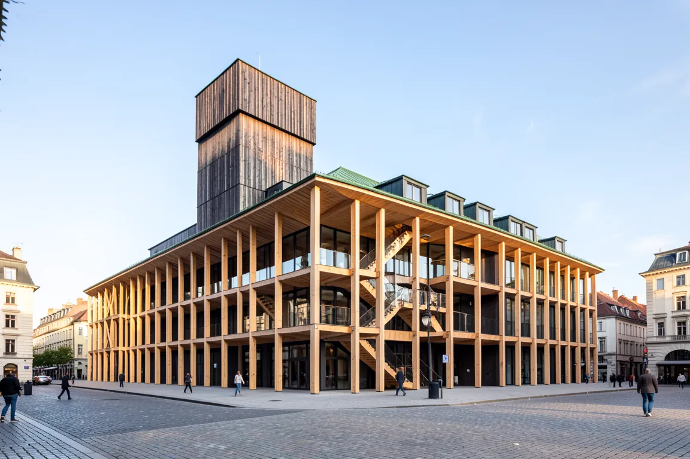

архитектура · 1995–present · также: Новая деревянная архитектура, Архитектура из инженерной древесины, Архитектура CLT
Здания из инженерной древесины. Клеёная крестовая древесина (CLT) и клеёные балки дают перекрытия, стены и каркасы, а также высотные здания на 6–25 этажей с тёплым интерьером и малым углеродным следом.

Главная идея
Здание можно сделать из панелей и балок инженерной древесины, и тем самым запасать углерод, быстро строить вне площадки и показывать тёплую текстуру собственной конструкции.
Принципы дизайна
Берите панели из CLT толщиной 0,1–0,3 м для перекрытий и стен, а клеёные балки и колонны ставьте на сетке 6–9 м.
Показывайте дерево: оставляйте видимыми потолок, балку и колонну, с припуском на обугливание при пожаре 40–60 мм.
Изготавливайте на заводе и поднимайте панели на площадку по плану с допуском 2–5 мм.
Держите сетку регулярной и повторяющейся, потому что размер панели и грузовика задаёт модуль.
Защищайте дерево от воды: берите глубокий свес, навесной фасад и вентилируемую полость 20–40 мм.
Сочетайте с бетонным ядром или гибридным перекрытием для жёсткости и пожарной безопасности, когда здание выше 8 этажей.
Антипаттерны
Дерево, спрятанное за гипсокартоном на каждой поверхности
Сетка настолько нерегулярная, что каждая панель уникальна
Открытые торцы древесины под дождём
Поддельная облицовка под дерево на стальном каркасе
Длинные необработанные деревянные пролёты без пожарного расчёта